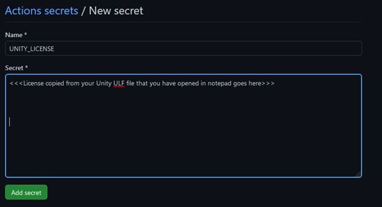

If you are planning on deploying to a local machine (or a VM) there are certain steps, you need to take alongside a completed YAML file to ensure that your project deploys correctly. The first of these is to set up a runner on your GitHub machine using the runner system that is built into GitHub actions.
To do this, from your main repository window you need to first click on settings on the right-hand side of the side of the toolbar
From the settings window you then need to select the actions dropdown from the menu on the left hand side, and then select the “runners” option.
You must then click the “New self-hosted runner” button on the top right hand side of the screen.

You should then select the “Windows” option from the three toolbars at the top, as our VM is currently running a Windows build. If you are looking to test this on a local machine you should select the OS you are planning to build on.
Open an instance of PowerShell and copy the commands from the first two boxes into it. Around three quarters of the way through this process you will end up with a screen like the one below.
When setting up your runner, leave the name of it’s runner group as default, and then give it a name that makes sense.
When the next option appears asking if you wish to add any additional labels press the enter button to skip.
You then must create a name for your work folder – GitHub’s system suggests to keep this as _work, so that is what we are going to do.
The next option asks if we would like to make the runner operate as a service – this means that the runner will start automatically when we start our OS. For now we are going to leave this as the default no, but if you are setting up a fully automated system in the future you may want to set this to yes.
When this setup is complete you can run the final command “./run.cmd” to start your runner listening.
This means that it is currently waiting for an action to begin speaking to it and telling it what to do.
Now we have our action listening, we need to write a YAML file that will allow us to connect to our runner and provide it with our application.
If you don’t know what a YAML is, or how they work – please check the tutorial on YAMLs provided!
The above YAML file will take your GitHub repository and then push it to your VM, automatically copying your files to the default location for IIS. – you must have made sure to have created and have your GitHub actions runner running before you complete this process, or the repo will have nothing to push to.
A few things to take note of:
Once you have done this you may commit your YAML file – once the process has completed, if it is successful, you will be able to access your site from anywhere on campus using your VMs IP address.
One of the features of GitHub we can use when putting together a workflow that involves hosting a project is GitHub pages, which is a service provided by GitHub that allows you to host projects for free directly from your repository – as long as they are static websites.
GitHub pages also has support for WebGL, which means that we can use it to host compiled Unity projects and make them accessible using the browser.
Before we start hosting however, we need to add some information to our GitHub repository that will let it know our Unity credentials – GitHub needs these so it can push them into our virtual machine and use them to build and test our projects.
To do this, we must first request a licence file from Unity. We can do this using a YAML file.
In GitHub navigate to the actions section and generate a new action, naming the action “activation”.
Enter the following YAML code and commit your completed action.
Commit your action and navigate to your recently created activation file action and you will see at the bottom of the page that if it succeeded it has created something called a an artifact, this is a file output that has come from running your YAML file. And should have the name of the Unity version used to upload the file followed by the extension “.alf “
Download the “. alf” file to your machine and extract the zip so that it can be accessed.
When you have downloaded your file then navigate to: https://license.unity3d.com/manual - you may be prompted to log into your Unity account – you may also run into a problem where the Unity licence website keeps refreshing – if this happens you may need to swap to a different browser.
Upload your “.alf” file using the on screen tool and you will be redirected to see if you would like to generate a licence for Unity personal or Pro, select personal and you when you have filled in the required information you will be asked to download the completed licence file.
When this has been completed you should then have downloaded a “.ulf” file – do not worry if this file does not match the name of your current Unity installation. They are backwards compatible.
Open your “.ulf” file using notepad and you should be greeted with an XML file that contains a collection of random characters for the signature – this is your Unity licence – we will need this in a second.
Navigate back to GitHub and into the repository that you are going to use, and click the settings option from the main GUI window.

From the settings window navigate down to security and click the secrets and variables section and then select “actions”
From this menu you should then select the “New repository secret” button that is visible on the top right-hand side of the menu.
This will redirect you to the new secret wizard.
In order for your GitHub action to pick up your license correctly you must give your secret the name UNITY_LICENSE, and then paste the license you downloaded earlier into the secret box.
Once this is complete press the add secret button and your secret will be added to your GitHub account.
We are now free to setup a YAML file for the testing and deployment of our Unity files.
If you wish to deploy a Blazor application to your Virtual Machine, there are a couple of steps that you need to take first.
In order for IIS to be able to host your created Blazor application it must first have access to the ASPNetCoreModule. To get access to this on your virtual machine you must first install the ASP.NET core hosting bundle that is provided by Microsoft and can be found at the link below:
Click Me For The Hosting BundleOnce you have installed the hosting bundle restart the IIS process by closing out of it and typing “iisreset” in the command prompt.
you can check that it has been installed successfully by navigating to IIS, selecting your server and selecting the modules tool.
Clicking modules should then redirect you to the modules window, and will provide you with a list of modules that IIS currently recognises.
You should now have a module named “AspNetCoreModuleV2”, this means that the module and bundle have been installed correctly and you can now host Blazor applications on your IIS server.
Now you have prepared your server to host Blazor documents, we are now going to publish our created Blazor application in a way that will allow the server to host it.
Ensure that the debug version of your Blazor document is working correctly, then right click on your Blazor document and choose “publish”
This will redirect you to the publish wizard within Visual Studio. There are several options we can use here but for the purpose of this demonstration click folder, and then next.
Leave the folder location that appears within the next screen at its default, and then click finish, then close.
This will change publish window to show you that you currently have a file that is ready to be published. To do this navigate to the button on the top right hand side of the wizard that says publish, and click it.
This will build your program and then Publish it to the folder. When this process has been completed Visual Studio should give you a prompt to say that is has been done successfully.
Click open folder and you should see the output of your published document – remember where these are you will need them later!
Before we copy our files over to the Virtual Machine we must first locate the folder where our host files are placed.
Log into your virtual machine and navigate to the root drive. You then need to go to inetpub -> wwwroot.
The “wwwroot” folder is the file we are going to place all of our application data into and what in turn IIS will pick from to host, there may currently be items in there, this is normal, and is the standard IIS template page.
Go back to your local machine and find the files that you wish to host on your server – for the purpose of this demonstration we are going to use the Blazor documents we created in the previous step – but any web format will do.
Highlight all of the files that you need, either press right click and copy, or press ctrl+C on your keyboard.
Navigate back to your virtual machine, specifically the wwwroot file we navigated to earlier and paste your files in, using either right click and paste or ctrl+V.
You can now delete the provided iis files if you wish.
To check and see your files are being hosted correctly go back to your local machine and open a browser – enter the name of your VM as the address and you should be greeted by your created website!